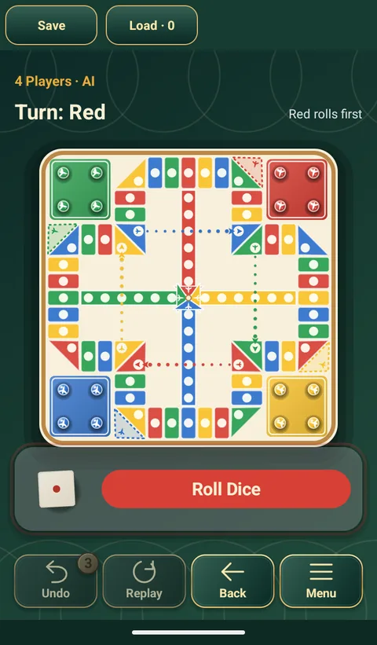

비행기 체스
飞行棋 · Aeroplane Chess
루도를 중국식으로 바꾼 인기 게임. 말은 비행기가 되고, 같은 색 칸에서 점프하거나 지름길로 날아가며 주사위 한 번에 판세가 뒤집힙니다.
비행기 체스 하는 법과 규칙
- 목표: 자기 비행기 네 대를 모두 도착점으로 보냅니다.
- 6이 나오면 비행기 한 대를 이륙시키거나 항로 위의 한 대를 6칸 전진시킵니다. 먼저 이동한 뒤 다시 굴립니다.
- 주사위 숫자만큼 항로를 따라 전진합니다. 자기 색 칸에 서면 다음 같은 색 칸으로 점프하고, 비행 칸에 서면 점선을 따라 날아갑니다.
- 상대 비행기가 있는 칸에 서면 그 비행기를 공항으로 돌려보냅니다.
- 도착점을 넘는 수가 나오면 도착점까지 간 뒤 남은 칸 수만큼 되돌아옵니다. 정확히 멈춰야 완주합니다. 움직일 수 있는 비행기가 있으면 반드시 이동해야 합니다.
이 앱의 비행기 체스
- 한 기기에서 2·3·4인.
- 모든 자리를 사람 또는 AI로 정할 수 있습니다.
- 같은 무료 앱에서 다른 클래식 보드게임 11종도 오프라인으로 즐길 수 있습니다.

앱의 다른 게임
 동물 장기
동물 장기 체스
체스 중국 장기
중국 장기 쇼기
쇼기 오목
오목 체커
체커 사목
사목 차이니즈 체커
차이니즈 체커 루잔치
루잔치 루도
루도 윷놀이
윷놀이비행기 체스 무료로 즐기기
Android 휴대폰과 태블릿에서 인터넷 없이 즐길 수 있습니다.